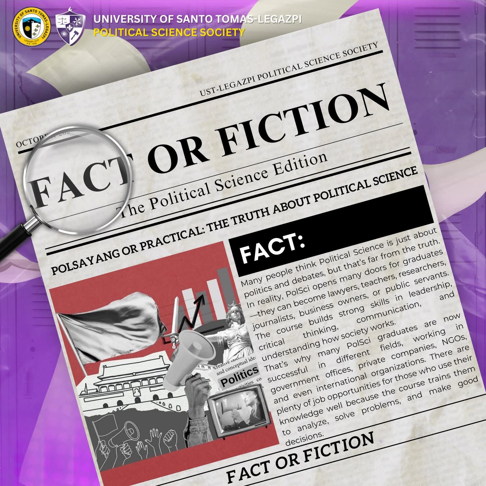
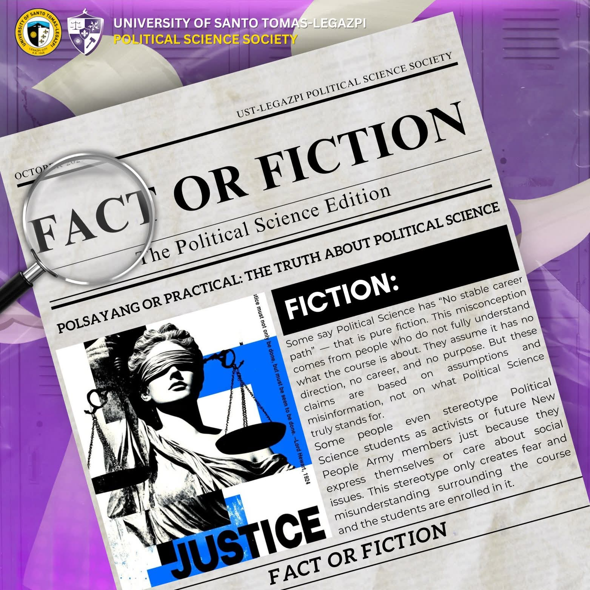
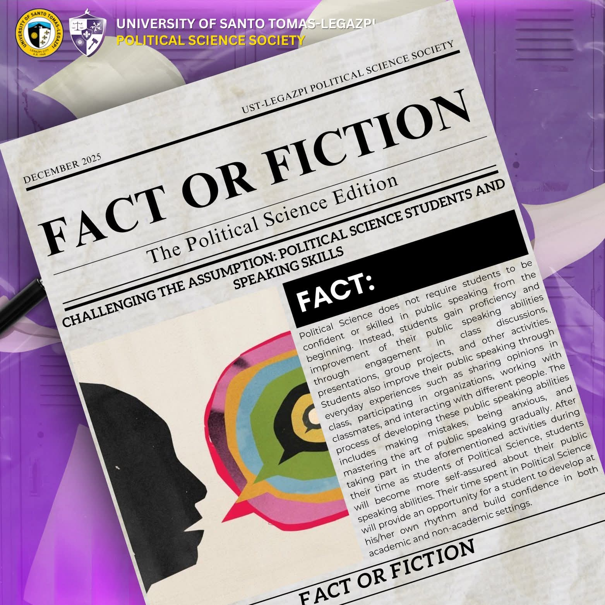
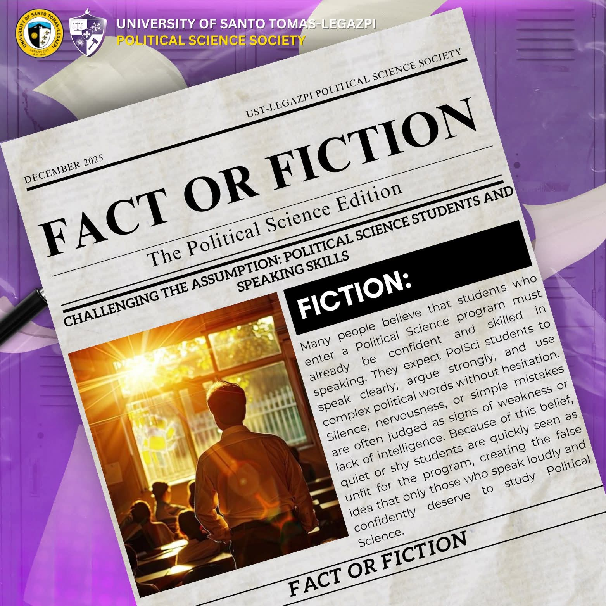
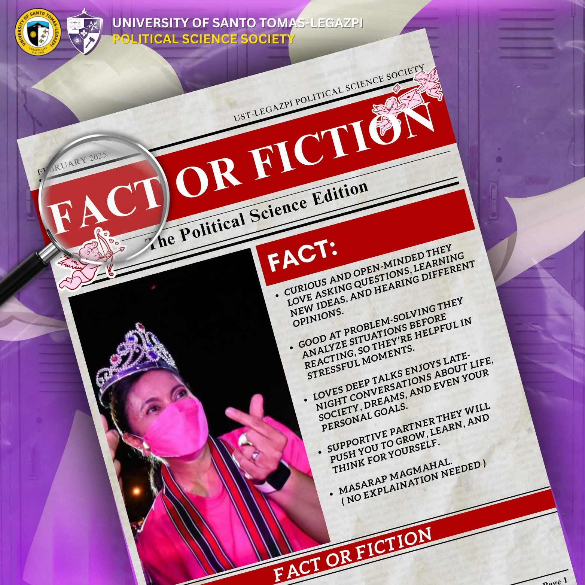
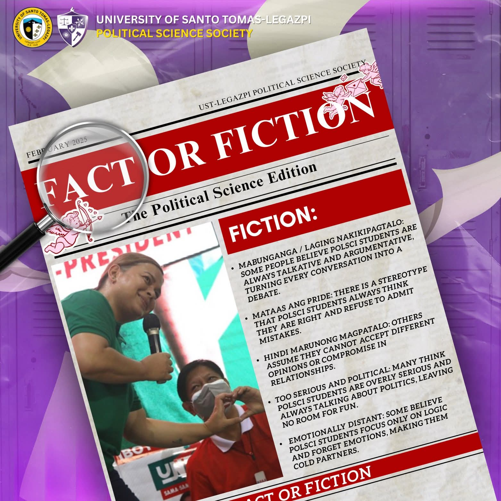
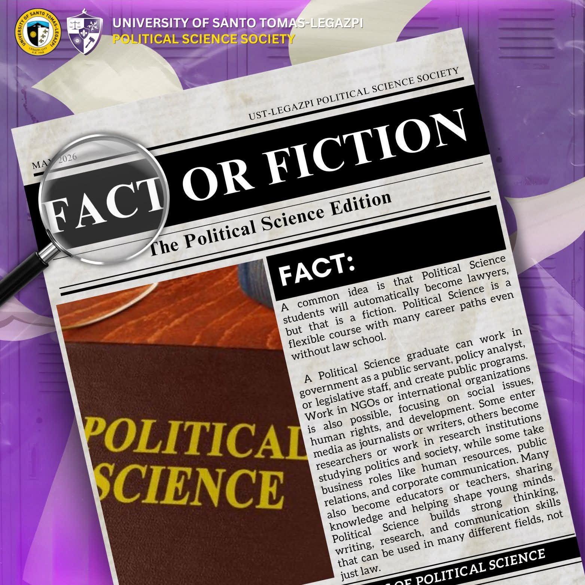
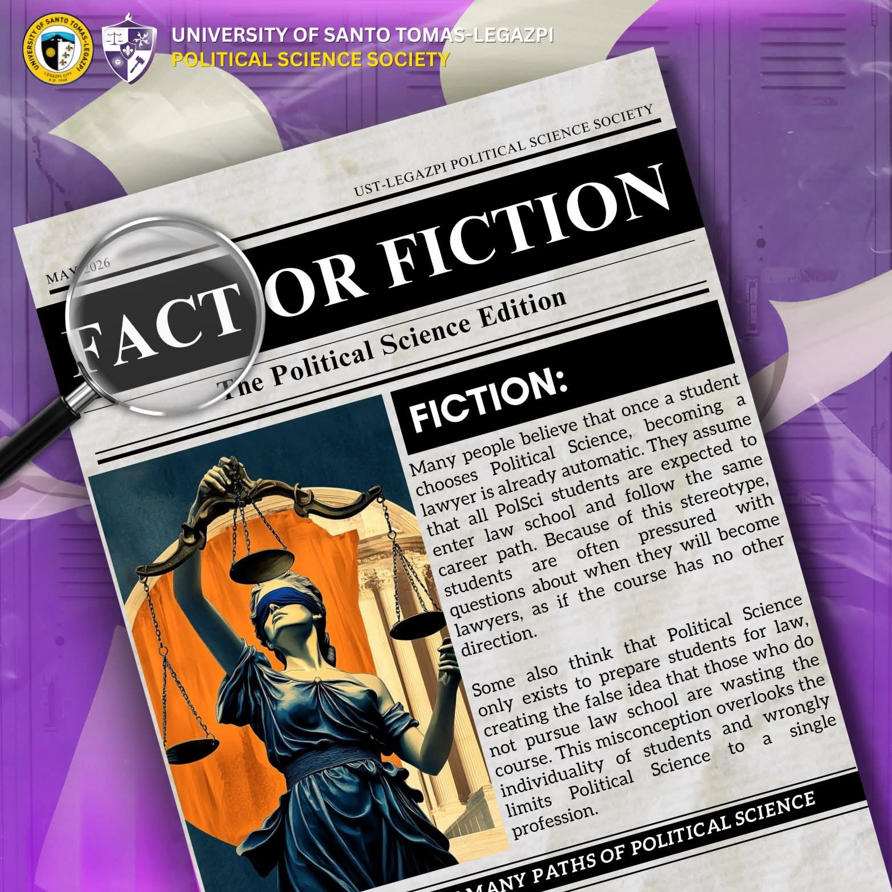

Fact or Fiction is an educational content initiative that provides factual information about Political Science while addressing common misconceptions surrounding the field.
Through concise and informative discussions, the series clarifies myths, explains political concepts, and promotes a better understanding of Political Science among students and the wider community.







